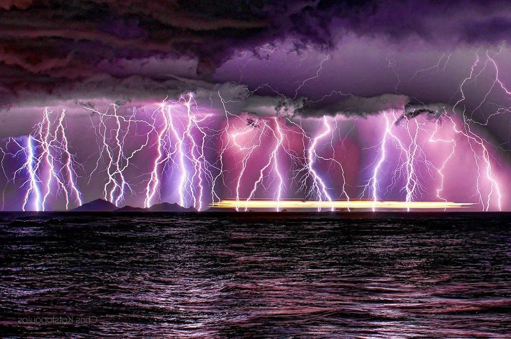
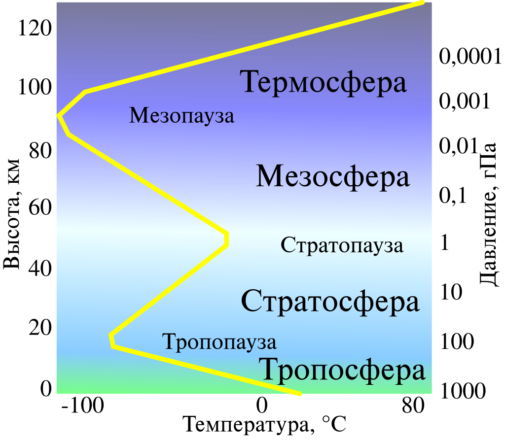

Метеорология (5)
Примечание: материал этого конспекта местами повторяет материал конспекта “Климат”. Рекомендуется сначала читать “Климат”, а потом уже этот конспект.
Метеорология - это наука об атмосфере Земли, ее строении, свойствах и протекающих в ней процессах и явлениях.
Совокупность значений метеорологических характеристик и атмосферных явлений, наблюдаемых в некоторый момент времени на данной территории, называется погодой.
Большинство атмосферных явлений происходят в тропосфере (самый нижний слой атмосферы, его верхняя граница находится на высоте 16-18 км на экваторе и 8-10 км в полярных областях), но некоторые атмосферные явления (например, перламутровые и серебристые облака) происходят и в более высоких слоях атмосферы - стратосфере и мезосфере.
Изменения погоды бывают периодические (Например, суточные или годовые. Обусловлены движением Земли.) и непериодические (чаще всего, обусловлены движением воздушных масс).
Строение атмосферы
Атмосфера - газовая оболочка Земли, в которой газ вращается вместе с Землёй как единое целое. Верхнюю границу атмосферы проводят на высотах 500-1000 км над земной поверхностью.
Плотность воздуха и давление в атмосфере Земли непрерывно убывают с высотой. А вот распределение температур более сложное (см. рис. ниже)
{kind=link}

Слои земной атмосферы:
- Тропосфера - самый нижний слой (верхняя граница находится на высотах 8-20 км и называется тропопаузой). Температура в тропосфере убывает с высотой. Здесь сосредоточено свыше 80% всего атмосферного воздуха. Здесь летают самолеты, образуются циклоны и выпадают атмосферные осадки.
- Стратосфера - слой атмосферы, нижней границей которого является тропопауза, а верхняя граница находится на высоте около 50 км. В стратосфере на высоте около 25-30 км располагается озоновый слой (озоновый экран), защищающий земную поверхность от наиболее жесткой части ультрафиолетового излучения. Температура в стратосфере с высотой повышается, достигая локального максимума на верхней границе данного слоя (в стратопаузе).
- Мезосфера - слой атмосферы, нижняя граница которого совпадает со стратопаузой, а верхняя граница лежит на высотах 80-100 км и называется мезопаузой. Температура убывает с высотой (достигая более низких значений, чем в тропопаузе). В мезосфере начинают светиться (и, как правило, сгорают полностью) метеоры. Здесь образуются самые высокие облака - серебристые.
- Термосфера - слой атмосферы, простирающийся от мезопаузы до высот 600-800 км. Температура здесь возрастает с высотой (причем зачастую скачкообразно) и может достигать 2000К. На высоте 100 км находится линия Кармана, считающаяся нижней границей космического пространства. В термосфере летает большинство искусственных спутников Земли, а также орбитальные космические станции (в данный момент их две — МКС и Тяньгун), а также проводятся пилотируемые орбитальные полеты. Чаще всего именно в термосфере возникают полярные сияния (свечение, вызванное взаимодействием заряженных частиц солнечного ветра с магнитным полем Земли).
- Экзосфера - внешний слой атмосферы. Очень разрежен. Согласно некоторым исследованиям, его верхняя граница отстоит от Земли дальше, чем орбита Луны.
Движения воздушных масс
Воздушная масса — большой объем воздуха в нижней части тропосферы, характеризующийся примерной однородностью своих характеристик (температуры и влажности). Воздушные массы могут иметь горизонтальные размеры в несколько сотен или даже тысяч километров.
Воздушные массы классифицируют в зависимости от широты возникновения:
- Арктические/антарктические воздушные массы (АВМ)
- Умеренные воздушные массы (УВМ)
- Тропические воздушные массы (ТВМ)
- Экваториальные воздушные массы (ЭВМ)
Также, в рамках каждого из этих типов можно выделить морские и континентальные воздушные массы.
Теплой (холодной) называют воздушную массу, температура которой в большую (меньшую) сторону отличается от температуры подстилающей поверхности.
Если же воздушная масса длительное время находится над той же территорией, где и сформировалась, ее температура совпадает с температурой подстилающей поверхности. Такую воздушную массу называют местной или нейтральной.
Атмосферные фронты - переходные зоны в тропосфере между различными воздушными массами.
Виды атмосферных фронтов:
- Тёплые (теплая ВМ “наступает”)
Характеризуются плавным увеличением температуры, затяжными, но не очень интенсивными осадками, туманами.
{kind=link}
- Холодные (холодная ВМ “наступает”)

Характеризуются резким похолоданием, нестабильной погодой, ливневыми осадками.
- Фронты окклюзии (окклюзия - смыкание тёплого и холодного фронтов)
- Стационарные (статичные или медленно движущиеся фронты, образующиеся между двумя областями высокого давления)

Климатические фронты - среднее положение атмосферных фронтов определенного типа.
Основными климатическими фронтами являются:
- Арктический и антарктический (граница АВМ и УВМ)
- Полярный (граница УВМ и ТВМ. На них формируются циклоны умеренных широт)
- Тропический (Граница ТВМ и ЭВМ. На них формируются тропические циклоны)
Каждый из климатических фронтов зимой смещается ближе к экватору, а летом - ближе к полюсам. Именно на положении климатических фронтов и основана классификация климатов Алисова (подробнее см. конспект “Климат”).
Также воздушные массы делят на устойчивые (с устойчивой стратификацией) и неустойчивые.
В устойчивой ВМ вертикальный температурный градиент меньше влажноадиабатического (т.е. меньше примерно 6 градусов на километр высоты). В такой воздушной массе слабо развита конвекция (т.е. перемешивание воздуха между ее нижними и верхними слоями). В таких условиях часты слоистые и слоисто-кучевые облака, а также туманы. Но может наблюдаться и ясная, безоблачная погода. Встречаются слои температурной инверсии.
Про причины и последствия температурных инверсий советую почитать подробнее:
https://ru.wikipedia.org/wiki/%D0%98%D0%BD%D0%B2%D0%B5%D1%80%D1%81%D0%B8%D1%8F_(%D0%BC%D0%B5%D1%82%D0%B5%D0%BE%D1%80%D0%BE%D0%BB%D0%BE%D0%B3%D0%B8%D1%8F)
В неустойчивых ВМ сильно развита конвекция, часто наблюдаются кучевые облака, ливневые осадки и грозы, переменчивая погода.
Атмосферные вихри
Циклон - атмосферный вихрь, в центре которого находится область низкого давления, куда “стекаются ветры”.
В северном полушарии циклоны всегда закручиваются против часовой стрелки, в южном наоборот (из-за силы Кориолиса).
Циклон приносит осадки, низкое давление, зимой - оттепель, а летом - похолодание.
Особо разрушительным циклонам даже дают имена (Дориан, Катрина, Ольга и т.п.)
Циклоны крайне редко возникают в непосредственной близости от экватора и на полюсах.

Различают два типа циклонов - внетропические и тропические (тайфуны). Тропические меньше по размеру, но в них больше барический градиент (скорость изменения давления от центра к краям) и, как следствие, они переносят больше энергии, порождая стихийные бедствия.
Для тропических циклонов свойственен “глаз бури” — небольшая (20-30 км в диаметре) область хорошей, безоблачной погоды в самом центре циклона.


Антициклон - область высокого давления, откуда “растекаются” ветры.
В северном полушарии закручиваются по часовой стрелке, в южном наоборот.
Погода в антициклоне безоблачная, безветренная, безосадочная. Летом - жара, зимой - заморозки (”Мороз и солнце; день чудесный”)

Основные характеристики погоды
Атмосферное давление
Атм. Давление — это модуль силы, с которой атмосфера Земли давит на все предметы на земной поверхности.
Оно чаще всего измеряется в гектопаскалях (гПа) или миллиметрах ртутного столба (мм рт. ст.).
1 гПа = 0.75 мм рт. ст.
Нормальным считается атмосферное давление в 760 мм рт. ст. (на уровне моря)
Но реальное атм. давление в том или ином месте может значительно отличаться от нормального. На Земле фиксировались значения атмосферного давления от 641 до 816 мм рт. ст. В центральной части торнадо давление может опускаться и ниже 600 мм рт. ст.
При подъеме в горы атмосферное давление падает (примерно на 1 гПа каждые 8 метров)
На картах атм. давление чаще всего обозначается с помощью изобар — изолиний, соединяющих точки с равными значениями атмосферного давления.
Температура воздуха
Температура воздуха — важнейшая характеристика как погоды, так и климата.
Чаще всего температуру воздуха измеряют по шкале Цельсия, которая является относительной. Но есть и альтернатива — абсолютная шкала (шкала Кельвина). Чтобы перевести значения из градусов Цельсия в Кельвины, нужно прибавить 273. Например, 30°С = 303K.
Температура воздуха в тропосфере уменьшается с высотой. Причем скорость ее изменения зависит от влажности воздуха. В заданиях олимпиад, если не указано иного, можно считать, что температура падает на 1°C каждые 200 м вертикального подъема.
Некоторые температурные рекорды:
- Самая высокая официально зарегистрированная температура: 56.7˚C (июль 1913 года, Долина Смерти, Калифорния, США). Но есть и неофициальные рекорды:
- 58.2˚C (сентябрь 1922, г. Эль-Азизия, Ливия)
- 70.7˚C (2005 год, пустыня Деште-Лут, Иран)
- Самая низкая официально зарегистрированная температура: −89,2˚C (июль 1983 года, станция “Восток”, Антарктида). Самая низкая среднегодовая температура на Земле - там же (примерно -57˚C).
- Неофициальный рекорд: −93,2˚C, зарегистрированные в Антарктиде с помощью спутника в 2013 году.
- Самая высокая среднегодовая температура: 34.4˚C (Даллол, Эфиопия)
- Самая низкая температура, зарегистрированная в Северном полушарии: −67,7°С (1933 год, село Оймякон в Якутии) или −67,8°С (1885 год, город Верхоянск в Якутии). Спор между этими двумя населенными пунктами за звание полюса холода северного полушария до сих пор не решен окончательно.
Влажность воздуха
Абсолютная влажность - количество водяного пара, содержащееся в воздухе (измеряется в граммах на кубометр)
При разной температуре воздух может вместить в себя разное количество водяного пара (чем теплее - тем больше). Если пара становится слишком много, влага конденсируется (выпадает в виде осадков).

Относительная влажность - отношение абсолютной влажности в данный момент к максимальному количеству водяного пара, которое воздух может вместить при данной температуре, выраженное в процентах.
Точка росы — температура, при котором воздух с данным значением абсолютной влажности достигает 100-процентной относительной влажности. При дальнейшем охлаждении воздуха, достигшего точки росы, влага из него начнет конденсироваться.
В экваториальных широтах среднегодовые значения относительной влажности превышают 85%. Низкими считаются значения относительной влажности менее 50%. Их часто можно наблюдать в тропических пустынях, а также летом в районах умеренного резко-континентального климата.
Средние значения относительной влажности на территории РФ представлены на картах ниже. Обратите внимание, насколько сильны различия между летними и зимними значениями для одних и тех же территорий.

Осадки
Виды осадков:
- Дождь - водяные капли от 0.5 до 5 мм в диаметре
- Снег - в виде снежинок или хлопьев
- Ледяной дождь - выпадает при наличии температурной инверсии (капли дождя, выпадающие из облаков, начинают замерзать в нижних, более холодных слоях атмосферы, образуются “ледяные шарики”, внутри которых находится незамерзшая вода). Часто приводит к образованию гололеда и гололедицы
- Морось - жидкие осадки в виде очень мелких капель, которые парят в воздухе.
- Снежные зерна - твердые осадки в виде очень мелких непрозрачных белых частиц
- Снежная крупа - твёрдые осадки ливневого характера, выпадающие при температуре воздуха около нуля градусов и имеющие вид непрозрачных белых крупинок диаметром 2—5 мм; крупинки хрупкие, легко раздавливаются пальцами (в отличие от града).
- Ледяная крупа - твёрдые осадки ливневого характера, выпадающие при температуре воздуха от −5 до +10° в виде прозрачных (или полупрозрачных) ледяных крупинок диаметром 1—3 мм; в центре крупинок — непрозрачное ядро. Крупинки достаточно твёрдые (раздавливаются пальцами с некоторым усилием), при падении на твёрдую поверхность отскакивают.
- Град - твёрдые осадки, выпадающие в тёплое время года (при температуре воздуха выше +10°) в виде кусочков льда различной формы и размеров: обычно диаметр градин составляет 2—5 мм, но в ряде случаев отдельные градины достигают размеров голубиного и даже куриного яйца. Продолжительность града, как правило, невелика (несколько минут).
- Ледяные иглы - твёрдые осадки в виде мельчайших ледяных кристаллов, парящих в воздухе, образующиеся в морозную погоду (температура воздуха ниже −10…−15°). Днём сверкают в свете лучей солнца, ночью — в лучах луны или при свете фонарей. Часто ледяные иглы образуют в ночное время красивые светящиеся «столбы», идущие от фонарей вверх в небо.
- Роса - капельки воды, образующиеся на поверхности земли, растениях и любых предметах при конденсации атмосферной влаги непосредственно из воздуха.
- Иней - аналог росы, образующийся при отрицательной температуре. Процесс образования кристалликов льда из водяного пара, взвешенного в воздухе, называется десублимацией.
- Гололед - слой льда, образующийся на растениях, проводах, предметах, поверхности земли в результате намерзания частиц осадков (переохлаждённой мороси, переохлаждённого дождя, ледяного дождя, ледяной крупы, иногда дождя со снегом) при соприкосновении с поверхностью, имеющей отрицательную температуру. Сильный гололед может приводить к обрыву проводов и обламыванию веток деревьев.
- Гололедица - Слой льда, образующийся на поверхности земли (и только земли, в этом основное отличие от гололеда) в результате замерзания воды после оттепели.
Количество выпадающих осадков измеряется в миллиметрах и является важнейшей характеристикой климата.
Но не менее важна и сезонность выпадения осадков (наличие сухого/влажного сезонов).
Облака
Облака состоят из очень мелких капель воды или кристалликов льда. Когда эти капли/кристаллы увеличиваются в размерах и становятся тяжелее, из облака выпадает дождь, снег или иные виды осадков.
При температуре выше -10°C облака преимущественно состоят из мелких капель воды. При температуре ниже -10°C — преимущественно из кристалликов льда. Также есть облака смешанного состава, которые состоят из смеси водяных капель и ледяных кристаллов.
Осадки, как правило, выпадают из облаков, имеющих смешанный состав (кучево-дождевые, слоисто-дождевые, высоко-слоистые)
Большинство облаков образуются в тропосфере, но есть и исключения:
- Перламутровые облака (образуются в стратосфере на высоте 20-25 км)
- Серебристые облака (образуются в мезосфере на высотах до 80 км)
Виды облаков:
- Перистые — образуются в верхних слоях тропосферы, состоят из мелких кристалликов льда, имеют значительную вертикальную протяженность и рваную структуру. Такие облака, наблюдаемые на закате, считаются предвестниками хорошей погоды.

- Перисто-кучевые — образуются на значительных высотах, визуально похожи на рябь на поверхности воды. Осадки из них не выпадают, но они считаются предвестниками ухудшения погоды.

- Перисто-слоистые — имеют вид однородной белесоватой пелены, сквозь которую, тем не менее, просвечивает Солнце/Луна. Образуются в верхних слоях тропосферы.

- Высококучевые — в виде хлопьев, разделенных просветами. Типичны для теплого сезона. Образуются на высотах 2-6 км. Часто наблюдаются при прохождении холодного фронта, поэтому могут быть предвестниками ливней/гроз.

- Высокослоистые — имеют вид однородной волнистой пелены серого/синеватого цвета. Образуются на высотах 3-5 км. Могут приносить обложные осадки.

- Слоисто-дождевые — темно-серые/темно-синеватые. Обязательно выпадение обложных осадков.

- Слоисто-кучевые - крупные гряды хлопьев/пластин, с редкими просветами. Образуются на высотах до 2 км. Осадки из них, как правило, не выпадают.

- Слоистые — похожи на туман. Образуются на небольшой высоте над землей (от нескольких десятков до нескольких сотен метров). Из них могут выпадать осадки в виде мороси.

- Кучевые — имеют значительную высоту (до нескольких километров). Нижняя граница облака находится не очень высоко (обычно на высоте 1-2 км). Возникают при конвективном подъеме теплого воздуха.

- Кучево-дождевые — облака с сильным вертикальным развитием (могут достигать высот 14-16 км). Приносят интенсивные ливневые осадки. Часто с грозой и/или градом.

Схема основных видов облаков:

Ниже приведены более необычные типы облаков:
- Серебристые - образуются на очень больших высотах (50-80 км). Видимы, как правило, в глубоких сумерках (когда Солнце освещает их из-за горизонта).

- Перламутровые - образуются в стратосфере при наличии в ней ядер конденсации (чаще всего это аэрозоли и взвешенные частицы, например вулканический пепел).

- Вымеобразные (трубчатые) — Встречаются редко, преимущественно в жаркую погоду, связаны с развитием кучево-дождевых облаков, — при низкой влажности воздуха в подоблачном слое и значительном изменении скорости ветра с высотой вблизи уровня нижней границы облаков.

- Лентикулярные — имеют линзовидную форму, образуются на гребнях воздушных волн (зачастую — когда воздух переваливается через горный хребет или отдельную вершину). Остаются неподвижными длительное время.

- Пирокумулятивные — буквально “огненные облака”. Образуются благодаря восходящим конвективным потокам теплого воздуха, образующимся благодаря пожару или извержению вулкана.

Облачность — важная характеристика не только погоды, но и климата. Облака имеют высокое альбедо, поэтому высокая облачность способствует охлаждению. С другой стороны, облака усиливают парниковый эффект.
Ветер
Ветер - движение воздуха из области более высокого в область более низкого атмосферного давления.
Ветры характеризуются скоростью, направлением и масштабом (глобальные/местные), а также силами, которые их вызывают.
Направление ветра — та сторона света, ОТКУДА дует ветер.
Глобальные постоянные ветры:
- Пассаты - ветры, дующие в направлении от тропиков к экватору, отклоняясь на запад из-за силы Кориолиса. В северном полушарии пассаты имеют северо-восточное направление, а в южном - юго-восточное
- Западные ветры умеренных широт
- Восточные ветры приполярных областей
Подробнее про глобальную циркуляцию атмосферы см. конспект “Климат”
Ветры, периодически меняющие свое направление:
- Муссоны (дуют летом с моря на сушу, а зимой - в обратном направлении). Иногда их относят к глобальным ветрам. Подробнее про районы и причины возникновения муссонов см. конспект “Климат”.
- Бризы (дуют днем с моря на сушу, а ночью - наоборот). Их возникновение вызвано разницей теплоемкостей воды и горных пород, слагающих сушу. Вода медленнее нагревается и остывает, нежели суша. Поэтому днем над более нагретой сушей формируются восходящие конвективные потоки нагретого воздуха, что приводит к образованию зоны пониженного давления, поэтому ветер устремляется в направлении суши. Ночью все наоборот (так как водная поверхность имеет более высокую температуру в сравнении с сушей).

Схема бриза (вверху - дневная картина, внизу - ночная)
- Горно-долинные ветры — аналог бризов. Вызваны тем, что над взгорьями воздух прогревается и остывает интенсивнее, нежели в долинах. Днем ветер дует из долин, а ночью - обратно.
Некоторые местные ветры:
- Фён (аналогично - Чинук, Санта-Ана и проч. локальные названия) — сухой ветер, дующий с гор.
Механизм образования фёна следующий: поднимаясь по склонам гор, воздух охлаждается, достигает точки росы, влага из него конденсируется (выпадают осадки). Затем, перевалившись через горный хребет, воздушная масса опускается, нагревается, вследствие чего уменьшается ее относительная влажность (абсолютная влажность при этом не меняется). Так и возникает сухой ветер - фён. На подветренных склонах горных хребтов, как правило, выпадает значительно меньше осадков, нежели на наветренных. Этот эффект носит название дождевой тени.

Чинук (фён), схема образования.
- Бора - порывистый холодный ветер, дующий на побережьях морей с горных хребтов. Образуется, когда невысокий горный хребет разделяет теплый воздух (над побережьем) и холодный, и холодная ВМ переваливается. Может достигать силы 40-60 м/с, приносит резкое похолодание, брызги морской воды намерзают на корпуса кораблей, причалы и портовые механизмы.
Бора часто происходит в Новороссийске, делая невозможной работу порта. Аналогами боры являются французский мистраль и чукотский южак.
Последствия боры в порту Новороссийска Бора, наряду с ледниковыми ветрами, является примером катабатического ветра (т.е. ветра, вызванного нисходящим движением холодного воздуха под действием силы тяжести).
- Названия основных местных ветров в Средиземноморье:

- Названия основных местных ветров на Байкале:

- Самум - очень сухой горячий ветер, наблюдающийся в пустынях Африки и Аравийского полуострова. Часто сопровождается песчаными бурями и грозами. Обычно перед началом самума пески начинают «петь» из-за трения песчинок друг о друга.
- Харматан - сухой жаркий пассат в Сахеле (на берегу Гвинейского залива). Приносит пыль и песок с Сахары.
- Хамсин - сухой жаркий ветер, приносящий пыль и песок из Сахары. Наблюдается на северо-востоке Африки (Египет, Судан) и в странах Ближнего Востока. Обычно наблюдается весной (после дня равноденствия).
- Суховей - сухой жаркий ветер в степных, лесостепных, полупустынных зонах. Образуется по краям антициклонов. Вреден для земледелия, т.к. иссушает почву и листья растений.
- Зефир - западный ветер, господствующий в восточной части средиземноморья. Считается легким и приятным, но может приносить бури и грозы.
Атмосферные явления
Атмосферные осадки (гидрометеоры), рассмотренные выше, — лишь одна из категорий атмосферных явлений.
Также существуют:
- Литометеоры (от греч. “камень, парящий в воздухе”) — атмосферные явления, связанные с взвешенными в воздухе твердыми частицами. Примеры — песчаная буря, мгла
- Электрические явления — молния, шаровая молния, огни Святого Эльма и т.п.
- Оптические явления — их возникновение связано с преломлением/дифракцией солнечного или иного света в атмосфере. Примеры - радуга, гало, миражи, световые столбы и т.п.
- Прочие. Например, смерчи.


Синоптические карты
(не путать с климатическими картами)
На синоптических картах отражены результаты метеорологических наблюдений на множестве метеостанций в определенный момент времени.
Что отражено на синоптических картах:
- Температура (подписывается на карте рядом с пунктом наблюдения, см. пример ниже)
- Распределение атмосферного давления (с помощью изобар и подписей в пунктах наблюдения, а также обозначения центров высокого и низкого давления). Важное уточнение — чаще всего атмосферное давление на уровне моря колеблется в пределах 940-1050 гПа, поэтому часто цифры, стоящие в разрядах сотен и тысяч, на синоптические карты не наносятся (например, если атм. давление составляет 965.5 гПа, на синоптическую карту будут нанесены цифры 655. А если давление составляет 1003.3 гПа, на синоптическую карту будет нанесены цифры 033).
- Атмосферные фронты

- Ветер (направление и сила)

Направление полета “стрелы” совпадает с направлением ветра. Например, на этой картинке все ветры дуют слева направо.
- Атмосферные явления

- Характер облачности (Белый кружок = безоблачное небо, черный = сплошная облачность. Также возможны промежуточные варианты. См пример ниже)
- Характер изменения давления в пунктах наблюдения за последнее время (чаще всего за 3 часа)
- Точка росы
Пример изображения состояния погоды на некоторой метеостанции на синоптической карте:
{kind=link}
Пример синоптической карты:

Здесь всегда можно посмотреть актуальные синоптические карты: